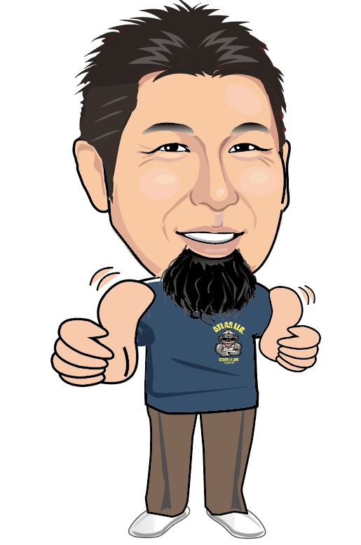

八王子の訪問マッサージ
支える力で、
動ける毎日へ。
訪問専門の鍼灸マッサージです。通院が難しい方のご自宅や施設へ、国家資格を持つ施術者が伺います。健康保険が使え、医師の同意書の手続きもこちらで代行します。
- 健康保険が使えます
- 交通費は保険に含みます
- 土日・時間外もご相談可
- 同意書の手続き代行

こんなお困りごとはありませんか？
- 足腰が弱って、通院するのが大変になってきた
- 寝ている時間が長く、体がこわばっている
- 家族として、体のケアをどうしたらいいか分からない
- 保険で受けられるマッサージがあるのか知りたい
通院しなくても、ご自宅や施設で施術を受けられます。
施術内容
訪問マッサージ
1回20〜30分、週2〜3回が目安です。
変形徒手矯正術
はり・きゅう
はり師・きゅう師の資格を持つ施術者が伺います。
運動指導・機能訓練
保険が使えるかどうかは、症状や医師の判断によって異なります。まずはお気軽にご相談ください。
アトラスの訪問マッサージ 3つの特徴
毎回同じ担当者が伺います
担当者は固定です。体の状態や生活のご様子を分かったうえで施術するので、ご本人もご家族も安心です。
ケアマネジャー・ご家族と連携します
ケアマネジャーの方へは施術の報告書をお送りします。ご家族へは介助のアドバイスも行い、身の回りの困りごともご相談いただけます。
時間外・土日もご相談ください
デイサービスや通院の予定に合わせて、時間外の訪問もできる限り調整します。
施術者のご紹介
代表 佐藤 信助
地域の方の体の悩みに寄り添いたい。そう思って訪問マッサージを始めました。
できなかったこと、できなくなってしまったことに、もう一度チャレンジしてみよう。そんな前向きな気持ちになっていただけたら嬉しいです。痛みのケアだけでなく、暮らしの困りごとや先々の不安にも耳を傾け、寄り添うことを大切にしています。
- 資格
- あん摩マッサージ指圧師／はり師／きゅう師（国家資格）
料金・健康保険について
訪問マッサージは、医師の同意があれば健康保険（療養費）を使って受けられます。
| ご負担額 | 保険の負担割合（1割・2割・3割）によって異なります。 お電話で、目安の金額をご案内します。 |
|---|---|
| 交通費 | 保険の中に含まれます。 |
| 医師の同意書 | 書類の準備から、主治医へのご依頼まで代わりに行います。 |
| 施術時間・回数 | 1回20〜30分／週2〜3回が目安です。 |
※ 保険が使えるかどうかは、症状と医師の判断によります。保険を使わない自費メニューはございません。
ご利用の流れ
お電話でご相談
ご本人・ご家族・ケアマネジャーの方、どなたからでも大丈夫です。
ご訪問・ご説明
ご自宅や施設に伺い、体の状態をお聞きします。費用や保険の説明もこのときに行います。
医師の同意書をいただく
書類の準備や主治医へのご依頼は、こちらで代行します。
施術スタート
同じ担当者が定期的に伺います。ケアマネジャーの方へは施術の報告書をお送りします。
お問い合わせから初回の訪問までは、おおよそ2〜3日です（最短で翌日から伺えます）。
対応エリア
八王子市全域と日野市の一部に伺います。
ご自宅のほか、有料老人ホーム・サービス付き高齢者向け住宅・グループホームにも訪問しています。
八王子市内の主な訪問地域
上記以外の地域やエリア外の方も、お気軽にご相談ください。
よくあるご質問
健康保険は使えますか？
はい。医師の同意があれば、健康保険（療養費）を使って受けられます。同意書の手続きはこちらで代行します。
費用はどのくらいかかりますか？
保険の負担割合（1割・2割・3割）によって変わります。お電話で目安の金額をご案内します。交通費は保険に含まれます。
家族が不在でも施術を受けられますか？
はい、ご家族が不在の時間でも伺えます。
土日や夕方以降でも来てもらえますか？
定休日は土曜・日曜ですが、ご予定に合わせて時間外の訪問もご相談に応じます。
エリア外ですが相談できますか？
はい、まずはお電話でご相談ください。
マッサージ以外のことも相談できますか？
ご家族への介助のアドバイスや、身の回りの困りごとについてもご相談ください。
まずはお気軽に
お電話ください。
ご本人・ご家族・ケアマネジャーの方、どなたからでも受け付けています。
☎ 070-1524-0101